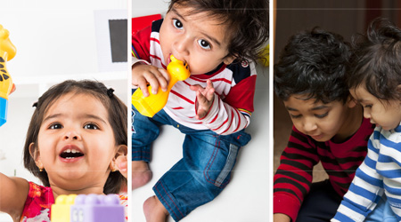

Dr. V. Krishnamurthy is the president of Dr. V. Krishnamurthy Educational Foundation. Presently Dr. V. Krishnamurthy is the Chancellor of Central University of TamilNadu (Thiruvarur) and Indian Maritime University (Chennai). He is also Member, Board of Governors, Administrative Staff College of India, Hyderabad.
Dr. V. Krishnamurthy has been associated with National College for the last 9 years as its President during which period the college has been transformed into a Centre of excellence securing the highest grade rating of A+ by National Assessment and Accreditation Council (NAAC).
'Padma Vibhushan' Dr. V. Krishnamurthy is the doyen of Indian management, having headed the country's largest and most challenging public sector companies. He was Chairman and CEO of Bharat Heavy Electricals limited, Maruti Udyog limited and Steel Authority of India Limited. He has been Chairman of IIM Bangalore and Ahmedabad; IIT Delhi; Xavier Institute of Management, Bhubaneswar; and the Centre for Organization Development, Hyderabad. He has also been Chairman of the Technology Information, Forecasting and Assessment Council. He was Member of the National Advisory Council from 2004-08. Among other positions, he has served as Member, Planning Commission, and Secretary to the Government of India in the Ministry of Industry.
He was the Chairman of the National Manufacturing Competitiveness Council, holding the rank of a Cabinet Minister from 2004 to 2014. He was also a member of the Prime Minister's Council on Trade and Industry, Prime Minister's Trade and Economic Relations Committee, Prime Minister's Energy Coordination Committee, Prime Minister's High Level Committee on Manufacturing and the High-Level Advisory Group on Climate Change. He was the Chairman of the group set up by the Prime Minister for design and manufacture of civilian aircraft in India and the Co-Chairman of the empowered committee for setting up FAB facilities in India.
He was Member of the Board of Trustees and Executive Committee of the Rajiv Gandhi Foundation and Member of the Governing Council of the Rajiv Gandhi Institute of Contemporary Studies, based in New Delhi from its inception till 2014.
He studied to be a Chartered Engineer and holds a Doctorate in Economics from the Soviet Academy of Sciences, a Doctorate in Sciences from the Banaras Hindu University and a Doctorate in Letters from Pondicherry University.
Dr. V. Krishnamurthy is a highly decorated individual. He was conferred the Padma Shri in 1973, the Padma Bhushan in 1986, the Padma Vibhushan in 2007. He is the recipient of the Grand Cordon of the Order of the Rising Sun by the Government of Japan in 2009. His other awards include the Business Leadership Award by the Madras Management Association in 1975, the 'Businessman of the Year' title by Business India magazine in 1987, the Sir Jahangir Ghandy Medal in 1988, the 'Steelman of the Year' title by The Indian and Eastern Engineer in 1989, the Tata Gold Medal by the Indian Institute of Metals in 1989, the National HRD Award in 1989 and the Special Nakajima Award by the Japan Institute of Plant Maintenance in 2007. As a mark of respect to his eminence as a visionary leader and an institution builder and for his pursuit of excellence, the Centre for Organization Development, Hyderabad, honoured him by establishing the ‘V. Krishnamurthy Award for Excellence' in 2000.
Dr. V. Krishnamurthy's work, life and contribution to the Indian Public Sector has been documented in his book - "AT THE HELM" (published by Harper Collins in 2014). "SIGARAM PESUGIRATHU”, another book covering his life and career in Tamil is due for release soon.
Dr.V.Krishnamurthy desired to start this school as a tribute to his departed wife Mrs. Rajam Krishnamurthy. Backed by the people behind the Century-old National College, Tiruchirapalli, this school aspires to set new standards in education.
Rajam Krishnamurthy, wife of Dr.V. Krishnamurthy was born in 1932 in Tamilnadu. As a daughter of a school teacher, education was always close to her heart. She was a learner throughout her life. She was of the view that Learning is not confined to particular age and you are never too old to learn something. Her stress was on holistic education which is not restricted just to academics but which encompasses different levels of physical, emotional, mental and spiritual development. She believed in the concept that the human being is multi—dimensional and needs an all—round development of personality. She was particularly passionate about educating girl children and had supported many young girls and boys during her life time to secure a good education. This school is a tribute to her lifelong efforts to ensure that education is accessible to all strata of society and to her belief that holistic education is a foundation that no child must be denied.
